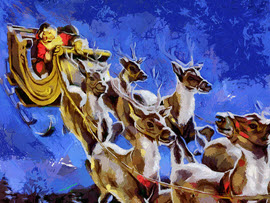

Kalėdų simboliai
Kalėdų senelis

Kalėdų senelis vilki raudonai baltais drabužiais, skrieja rogėmis, pakinkytomis 9 elniais. Kalėdų senelis gyvena Šiaurės Ašigalyje, Laplandijoje. Jis mėgsta pripildyti kojines smulkių dovanėlių ar padėti dovanų po eglute gruodžio 24d. naktį. Į namus jis patenka pro kaminą arba orlaidę...
Kalėdinė eglutė

Eglutė Kalėdų šventei pasirinkta dėl to, kad tai visžalis medis, simbolizuojantis gyvybę ir amžino gyvenimo viltį. Kalėdų eglutės atneša į namus ne tik kalėdinę nuotaiką, bet ir malonų miško kvapą. Manoma, kad trikampė eglutės forma simbolizuoja Šv. Trejybę — Dievo Tėvo, Dievo Sūnaus ir Dievo Šv. Dvasios.